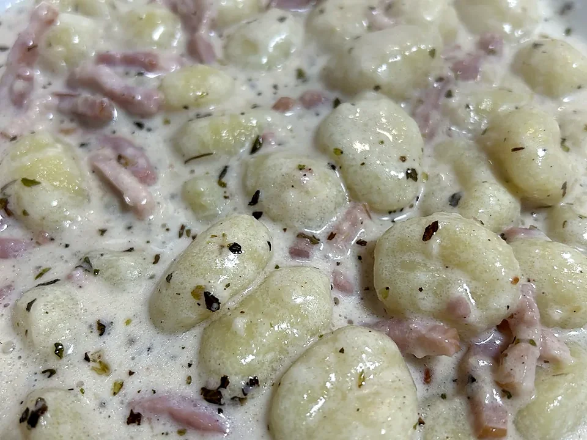

Ñoquis con salsa blanca y bacon
Ñoquis tiernos con una salsa cremosa de cebolla, bacon y nata, aromatizada con orégano, albahaca y nuez moscada. Listos en unos 25 minutos.
- Tiempo total
- 25 min aprox.
- Preparación
- 10 min aprox.
- Cocción
- 15 min aprox.
- Raciones
- 2–3 (orientativas)
- Dificultad
- Fácil

Ingredientes
2–3 raciones (orientativas)
Marca lo que ya tienes.
Las cantidades de ñoquis, bacon y nata son orientativas: la receta original no indicaba sus pesos ni el volumen de nata.
Cómo hacer ñoquis con salsa blanca y bacon
- Cuece los ñoquis. Pon una olla con agua a hervir y añade los ñoquis. Cuando suban a la superficie, déjalos un minuto más. Retíralos a un bol con una espumadera, sin escurrirlos demasiado.
- Pocha la cebolla. Pica la cebolla morada o de Figueres. En una sartén amplia con un poco de aceite de oliva, póchala a fuego medio hasta que esté bien doradita.
- Dora el bacon y el ajo. Añade el bacon y deja que se tueste. Incorpora el diente de ajo picado hacia el final y cocina lo justo para que se dore sin quemarse.
- Prepara la salsa blanca. Vierte la nata sobre el sofrito. Añade orégano, albahaca, sal, pimienta negra y una pizca de nuez moscada. Remueve y deja que la salsa se caliente y se integre.
- Mezcla y sirve. Incorpora los ñoquis con el poquito de agua de cocción que llevan adherida. Mezcla con cuidado hasta que queden bien cubiertos de salsa y sirve al momento.
UN POCO DE OFICIO
Para que te salgan bien
Consejos
No escurras los ñoquis por completo: el agua que queda adherida ayuda a ligar la salsa. Dora bien el bacon antes de añadir la nata.
Para no pasarte
Añade el ajo hacia el final del salteado para evitar que se queme. Con una pizca de nuez moscada basta para aromatizar la salsa.
Cómo servir
Pasa los ñoquis a la sartén cuando la salsa esté lista y sírvelos inmediatamente, antes de que se espese demasiado.
MÁS SOBRE ESTA RECETA
↑ Volver a la recetaQué hacer con unos ñoquis: una salsa blanca fácil con bacon
Los ñoquis de patata se preparan en pocos minutos y admiten salsas que se hacen mientras el agua hierve. Aquí la cebolla pochada aporta un punto dulce, el bacon añade sabor tostado y la nata lo une todo en una salsa suave. No necesitas una elaboración complicada para servir un plato completo.
Por qué funciona la salsa blanca
La cebolla se cocina primero para que pierda su dureza y quede bien dorada. Después entra el bacon, que necesita tiempo para tostarse antes de incorporar la nata. Ese orden da más sabor a una salsa que lleva pocos ingredientes. El orégano, la albahaca y la nuez moscada se añaden con moderación para que ninguno domine el plato.
El pequeño detalle del agua de cocción
Cuando los ñoquis suben a la superficie, la receta los deja un minuto más en el agua. Se retiran con espumadera y pasan a un bol sin escurrirlos por completo. Ese poco de agua que llevan consigo ayuda a unir la salsa de nata, sin tener que añadir más ingredientes ni trabajarla durante mucho tiempo.
Una idea rápida para la comida o la cena
Esta es una buena opción para un día con poco tiempo: cueces los ñoquis y, en paralelo, preparas la sartén con cebolla, bacon, ajo y nata. Si prefieres otra forma de preparar pasta con verduras, mira también los macarrones con calabacín y tomates cherry. Para una cena más pausada, puedes preparar la masa de pizza de fermentación lenta el día anterior.
Opiniones sobre esta receta
Consultando valoraciones…